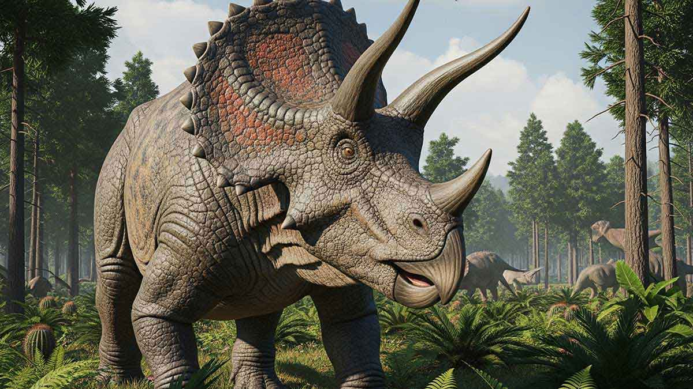
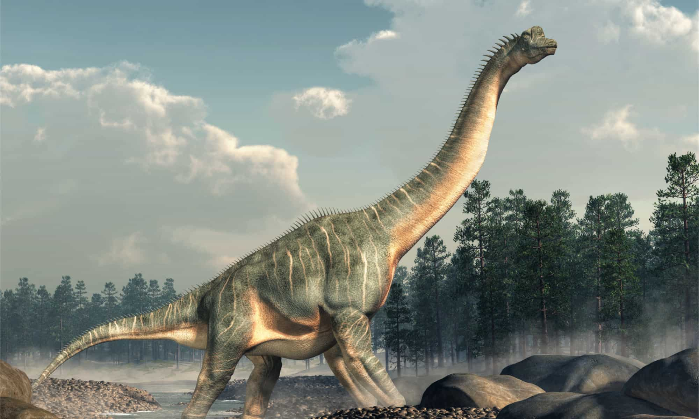
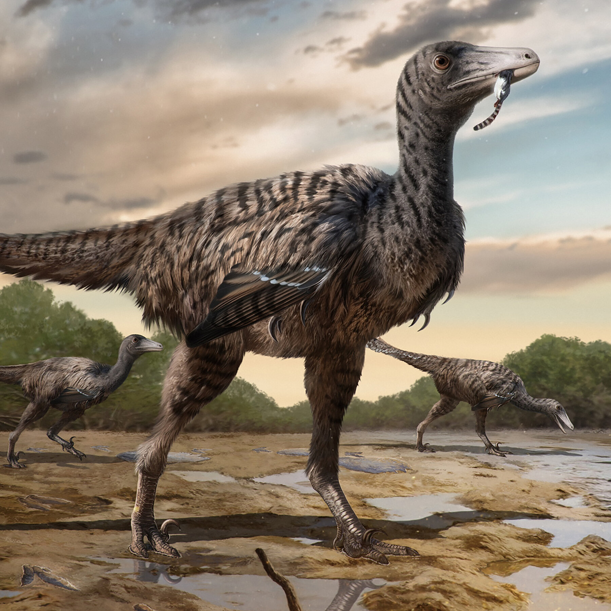
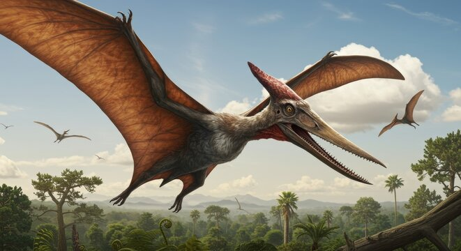

Tyrannosaurus Rex
Cretácico tardío • 68–66 millones de años atrás

Triceratops
Cretácico tardío • 68–66 millones de años atrás

Stegosaurus
Jurásico tardío • 155–150 millones de años atrás

Brachiosaurus
Jurásico tardío • 154–153 millones de años atrás

Velociraptor
Cretácico tardío • 75–71 millones de años atrás

Pterodactyl
Jurásico tardío • 150–148 millones de años atrás